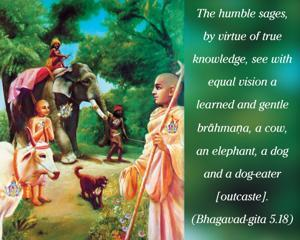
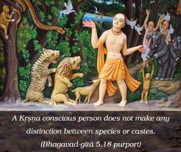
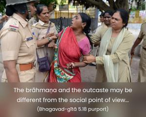

The humble sages, by virtue of true knowledge, see with equal vision a learned and gentle brāhmaṇa, a cow, an elephant, a dog and a dog-eater [outcaste].



A Kṛṣṇa conscious person does not make any distinction between species or castes. The brāhmaṇa and the outcaste may be different from the social point of view, or a dog, a cow and an elephant may be different from the point of view of species, but these differences of body are meaningless from the viewpoint of a learned transcendentalist. This is due to their relationship to the Supreme, for the Supreme Lord, by His plenary portion as Paramātmā, is present in everyone’s heart. Such an understanding of the Supreme is real knowledge. As far as the bodies are concerned in different castes or different species of life, the Lord is equally kind to everyone because He treats every living being as a friend yet maintains Himself as Paramātmā regardless of the circumstances of the living entities. The Lord as Paramātmā is present both in the outcaste and in the brāhmaṇa, although the body of a brāhmaṇa and that of an outcaste are not the same. The bodies are material productions of different modes of material nature, but the soul and the Supersoul within the body are of the same spiritual quality. The similarity in the quality of the soul and the Supersoul, however, does not make them equal in quantity, for the individual soul is present only in that particular body whereas the Paramātmā is present in each and every body. A Kṛṣṇa conscious person has full knowledge of this, and therefore he is truly learned and has equal vision. The similar characteristics of the soul and Supersoul are that they are both conscious, eternal and blissful. But the difference is that the individual soul is conscious within the limited jurisdiction of the body whereas the Supersoul is conscious of all bodies. The Supersoul is present in all bodies without distinction.